Backend Activation
Remember to call a specific backend to render your plots:
using Stereonet
using CairoMakie, GLMakie
CairoMakie.activate!()
# plot and save with CairoMakie
GLMakie.activate!()
# plot and save with GLMakieCreating a Stereonet
Create a stereonet with default attributes:
using Stereonet
using CairoMakie
h = hemi(size=(300, 300))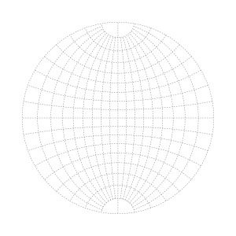
Grid and Frame Attributes
Attributes are defined as keyword arguments. The following table describes each attribute:
| Attribute | Description |
|---|---|
| net::Symbol | Projection type. Choose between :wulff for equiangular projections and :schmidt for equiareal projection. Default: :wulff |
| sstep::Int | Angular spacing (degrees) for small-circle grid. Default: 10 |
| gstep::Int | Angular spacing (degrees) for great-circle grid. Default: 10 |
| view::Tuple{Real,Real} | Viewing direction as (trend, plunge) in degrees. Default: (0, 90) (vertically downward) |
| acor::Real | Additional rotation angle (degrees) around the z-axis applied after view transformation. Default: 0 |
| frame::Symbol | Frame consists of NS and EW vertical planes when view=(0, 90). Options: :show or :hide. Default: :show |
| grid::Symbol | Whether to draw the stereonet grid. Options: :show or :hide. Default: :show. Note: Grid cannot be :show when frame is :hide. Setting this will change grid to :hide with a warning |
| size::Tuple{Int,Int} | Figure size in pixels. Default: (600, 600) |
| grid_color::Symbol | Color for grid and frame elements. Default: :gray |
| grid_linestyle::Symbol | Line style for grid and frame elements. Default: :dash |
| grid_linewidth::Real | Line width for grid and frame elements. Default: 0.5 |
| grid_alpha::Real | Transparency for grid and frame elements (0.0 to 1.0). Default: 1.0 |
| ticks::Symbol | Whether to draw tick marks outside the primitive circle. Options: :show or :hide. ⚠️ Work in progress - use with caution |
| tstep::Int | Angular spacing (degrees) for tick marks. Default: 10. ⚠️ Work in progress - use with caution |
| tlen::Real | Length of tick marks. Default: 0.015. ⚠️ Work in progress - use with caution |
Net view direction
Nets are usually displayed with the primitive oriented horizontally (viewed from above). With the attribute view, a net can be generated from any desired direction:
using Stereonet
using CairoMakie
h = hemi(
net = :schmidt,
view = (30, 20),
grid = :show,
size=(300, 300),
frame = :show,
grid_color=:deepskyblue2,
grid_linestyle=:solid
)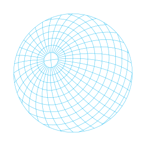
Plotting Linear Features
Linear features are plotted using lineations!:
using Stereonet
using CairoMakie
h = hemi(net = :schmidt, size=(300, 300))
lineations!(h, 300, 20) # trend=300°, plunge=20°
lineations!(h, [50], [0], marker = :rect,
markersize = 11, color = :yellow1)
lineations!(h, [220, 180, 140], [50, 50, 50], marker = :xcross,
markersize = 13, color = :green)
h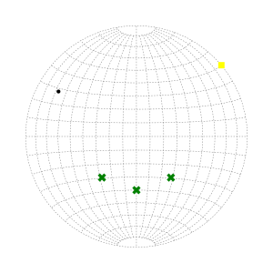
Linear Features Attributes
lineations! attributes are defined as keyword arguments. The following table describes each attribute:
| Attribute | Description |
|---|---|
| form::Union{Symbol, AbstractVector{Symbol}} | Determines whether linear features are treated as axes or vectors, choose between :a for axes and :v for vectors. Default: :a |
| color::Symbol | Fill color of the marker. Default: :black |
| markersize::Real | Size of the marker. Default: 6 |
For linear data, hemisphere selection is encoded in the orientation itself. Plunge sign and form control whether antipodal directions are distinguished:
Behavior with positive plunge (downward):
- Both
:aand:vplot the point at the same location on the lower hemisphere
using Stereonet
using CairoMakie
h = hemi(net = :wulff, view = (0, 90), size=(300, 300))
lineations!(h, [90, 90], [45, 45], form = [:v, :a], color = :red)
h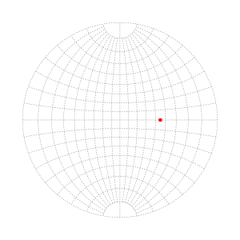
Behavior with negative plunge (upward):
:a(axis): Plots the antipode point on the lower hemisphere:v(vector): Plots the point on the upper hemisphere
using Stereonet
using CairoMakie
h = hemi(net=:wulff, view=(0, 90), size=(300, 300))
lineations!(h, [90], [-45], form = [:a], color = :green)
lineations!(h, [90], [-45], form = [:v], color = :red)
h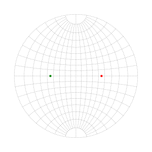
When using :v with negative plunge, you may want to distinguish between lower and upper hemisphere points. One approach is to use hollow markers:
using Stereonet
using CairoMakie
h = hemi(net = :wulff, view = (0, 90), size=(300, 300))
lineations!(h, 270, -20, form = :v,
color = :transparent,
strokewidth = 1,
marker = :hexagon,
markersize = 15,
strokecolor = :blue)
h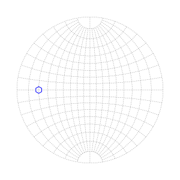
See discussion: [Markers without fill in Makie.jl](https://discourse.julialang.org/t/how-to-have-markers-without-fill-color-in-makie-jl/88698)Different Form for Each Point
using Stereonet
using CairoMakie
trends = [0.0, 45.0, 90.0, 135.0]
plunges = [15.0, 30.0, -45.0, -60.0]
forms = [:a, :v, :a, :v]
h = hemi(size=(300, 300))
lineations!(h, trends, plunges, form=forms)
h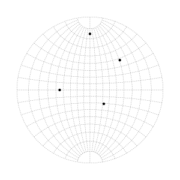
Same Form for All Points
using Stereonet
using CairoMakie
trends = [0.0, 45.0, 90.0, 135.0]
plunges = [15.0, 30.0, -45.0, -60.0]
h = hemi(size=(300, 300))
lineations!(h, trends, plunges, form=:v)
h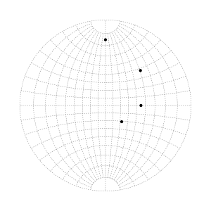
Plotting Planar Features
Planar features are plotted using traces!:
using Stereonet
using CairoMakie
h = hemi(net = :wulff, view = (0, 90), size=(300, 300))
traces!(h, 120, 45) # strike=120°, dip=45°
traces!(h, [250], [70], color=:darkgreen, linestyle= (:dashdot, :dense), linewidth=2)
h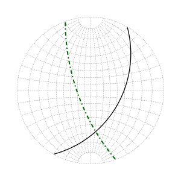
Planar Features Attributes
traces! attributes are defined as keyword arguments. The following table describes each attribute:
| Attribute | Description |
|---|---|
| hemi::Symbol | Whether to plot in the lower or upper hemisphere. Options: :lower or :upper. Default: :lower |
| view::Symbol | Whether to represent planes as traces or poles. Options:trace or :pole. Default: :trace |
| polecolor::Symbol | Fill color of the pole. Default: :black |
| polealpha::Real | Alpha value of the pole fill color attribute. Default: 1.0 |
| strokecolor::Symbol | Stroke color for pole outlines. Default: :black |
| strokewidth::Real | Line width for pole outlines. Default: 0 |
| linecolor::Symbol | Line color for traces. Default: :black |
| linewidth::Real | Line width for traces. Default: 1.3 |
| linealpha::Real | Line alpha value for traces. Default: 1.0 |
Plane traces are invariant under hemisphere–dip sign changes; for example, (dipdir, dip, hemi = :upper) and (dipdir, -dip, hemi = :lower) produce identical great-circle traces.
Example: Multiple Planes
using Stereonet
using CairoMakie
h = hemi(size=(300, 300))
# Plot multiple planes
strikes = [0, 45, 90, 135]
dips = [30, 45, 60, 75]
for (strike, dip) in zip(strikes, dips)
traces!(h, strikes, dips, color=:green, linewidth=1)
traces!(h, strikes, dips, color=:green, view=:pole)
end
h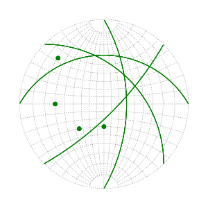
Small Circles
Small circles are conical sections on a sphere, defined by the axis trend and plunge, and the cone’s half-angle.
using Stereonet
using CairoMakie
h = hemi(size=(300, 300))
# Single small circle
smallc!(h, 0, 90, 30, draw=:line, color=:blue, linewidth=1) # Draw as line
smallc!(h, 0, 90, 30, draw=:poly, color=:ivory3) # Draw as filled polygon
# Multiple small circles
trends = [45, 135]
plunges = [15, 5]
half_angles = [15, 15]
smallc!(h, trends, plunges, half_angles, draw=:poly, color=:skyblue)
h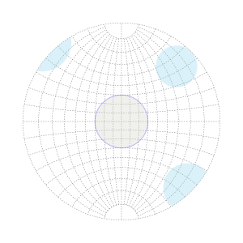
Small Circles Features Attributes
smallc! attributes are defined as keyword arguments. The following table describes each attribute:
| Attribute | Description |
|---|---|
| draw::Symbol | Drawing mode. Options are :line (draw circles outlines) or :poly (draw filled cirles). Default is :line |
| fill::Symbol | Fill color of circles. Default: :skyblue1 |
| polyalpha::Real | Alpha value of the fill attribute. Default: 0.3 |
| linecolor::Symbol | Line color for circles outlines. Default: :black |
| linewidth::Real | Line width for circles outlines. Default: 1.3 |
| linealpha::Real | Line alpha value for circles outlines. Default: 0.5 |
Why :line and :poly?
When a small circle intersects the primitive circle outlining the resulting polygons produces visually poor results. The :line option avoids this by allowing the trace to terminate cleanly at the primitive circle.
using Stereonet
using CairoMakie
h = hemi(size=(300, 300))
# Poor result
smallc!(h, 0, 0, 30, draw=:poly, color=:bisque, strokecolor=:black, strokewidth=2)
# Better!
smallc!(h, 90, 0, 30, draw=:poly, color=:bisque)
smallc!(h, 90, 0, 30, draw=:line, color=:black, linewidth=2)
h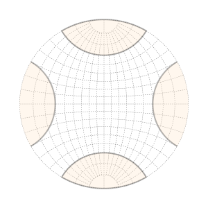
Saving Plots
Stereonet uses Makie's saving functionality. The format is determined by the active backend and the file extension.
using Stereonet
using CairoMakie, GLMakie
h = hemi(size=(300, 300))
# ... add your data ...
CairoMakie.activate!()
# Save as PDF
save("path/to/folder/some_plot.pdf", h)
# Save as SVG
save("path/to/folder/some_plot.svg", h)
GLMakie.activate!()
# Save as PNG
# Default resolution
save("path/to/folder/some_plot.png", h)
# Higher resolution (4x)
save("path/to/folder/some_plot.png", h, px_per_unit = 4)
# Very high resolution (6x)
save("path/to/folder/some_plot.png", h, px_per_unit = 6)